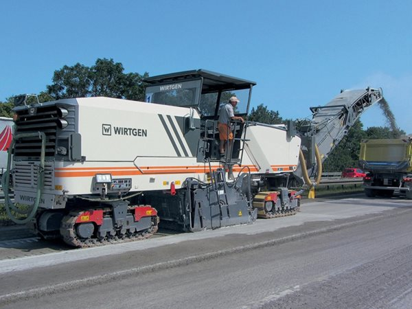
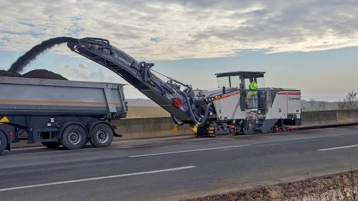

Sri Sai Vinayaka Engineering and Services is a road and highway construction company formed by civil engineers with hands-on experience delivering pavement and bridge works. We plan every contract around three things: correct sequencing, well-maintained machinery, and a workforce that has done this before.
Our scope covers new highway formation, bituminous and concrete paving, cold milling and resurfacing, and structural works for bridges and culverts, executed either as the main contractor or in partnership with larger infrastructure firms.

Site survey, quantity estimation and work programming before mobilisation begins.
In-house pavers, milling machines and haulage fleet, run by trained operators.
Material testing and compaction checks at every layer, closed out with as-built records.

Whether it is a short resurfacing stretch or a multi-kilometre highway package, we run every job with the same site discipline: safety briefings, daily progress tracking, and machinery kept in running condition so weather is the only thing that stops work.
We work directly with government road agencies, EPC contractors and private developers, and are equally comfortable reporting into a large project office or running a site independently.
Discuss a Project